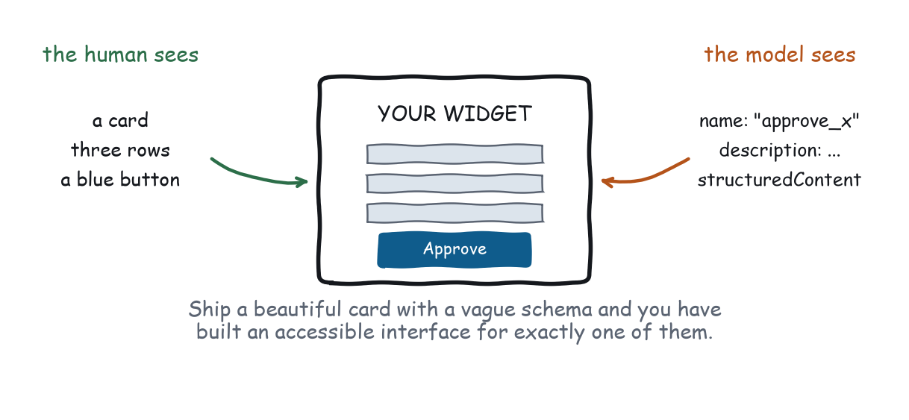
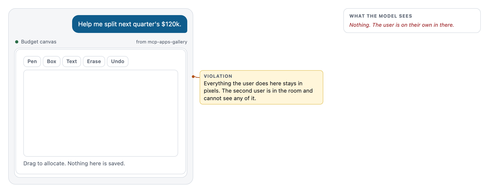
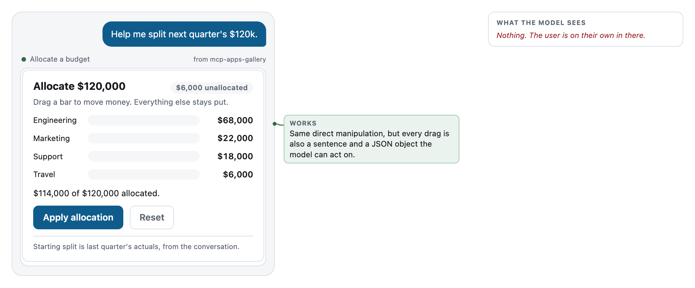
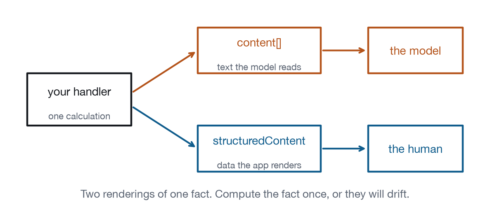

Chapter 2
Your App Has Two Users
The book's thesis: the human reads pixels, the model reads schemas, and both can be failed.
This is the idea the rest of the book is built on, so here it is stated plainly before we do anything with it. When your widget renders, two entities are looking at it. The human sees a card, three rows, and a blue button. The model sees your tool’s name, your tool’s description, the JSON Schema of your inputs, and whatever structuredContent you handed back. Those are different perceptual systems reading different artefacts, and neither of them can see the other’s. Every usability book ever written assumed one user. This one does not, and that assumption is the reason a lot of otherwise beautiful MCP Apps do not work.

Affordances, for something with no hands
Don Norman gave us the vocabulary. An affordance is a property of a thing that tells you what you can do with it: a handle affords pulling, a flat plate affords pushing, and doors get this wrong so consistently that he ended up famous for them. The model has affordances too. They are just not shaped like handles, and because they are not shaped like handles they tend to be written last, by whoever was still in the office, in a file nobody reviewed.
For the model, the affordances of your app are four strings and a schema. The tool name comes first, and it is doing more work than anybody credits: compare_rates affords comparing rates, while loan_analytics_suite_v3 affords nothing at all, because it names a product rather than an action and the model has no way to know what LoanIQ is. The description comes next, and it is the door handle, the single most important string in your entire application. Then the input schema, with its types, enums, required fields, defaults, and the per-property descriptions almost nobody writes, where every constraint you declare is a constraint the model does not have to guess. And finally the returned content, which is what the model gets to keep after your pixels are gone.
Look at the description on the gallery’s fixed rate comparison tool:
Captured output from tools/list
Show a comparison of the loan offers under discussion, ranked by total
cost over a horizon the user can adjust. Use when the user asks which
loan is cheapest, or wants to see how the answer changes if they pay
it off early.Two sentences. The first says what it does; the second says when to reach for it, in the words a user would actually use. That second sentence is the door handle, and without it the model has to infer applicability from a name, which is how you end up with a beautiful app that never gets invoked and a developer who concludes that hosts are broken. Now the before version, which is a perfectly reasonable sentence that fails completely: “Open the loan analytics suite to compare offers, view amortization schedules, run sensitivity analysis, and export results.” Four capabilities, no trigger conditions, and the verb is “open”. The model reads that and learns that this tool opens something, and opening things is not a user goal. Nobody in the history of software has wanted to open a suite.
The description formula
Descriptions are the highest-value strings you will write, and most people freeze in front of them. Three sentences, in this order, and you can stop: what it does, in the user’s vocabulary rather than your product’s; when to use it, phrased the way somebody would ask; and when not to, if there is a near neighbour it could be confused with. The clause finder in the gallery needs only the first two, because nothing else in that server looks like it. The flight picker needs all three, and the third one reads: Do not call this before origin, destination, and date are known. That is a real constraint and a model will honour it, which makes negative space part of the door handle and the part that nobody writes.
One habit is worth forming above all the others: write the description before you build the widget. If you cannot say in one sentence when somebody would want this, the widget is not going to fix that, and you have just found out for free.
Feedback, for something that was not watching
Norman’s other big idea was feedback: after you act, the system tells you what happened. Press the button, hear the click. In this medium there is a second feedback channel, and it is the one people forget entirely. When the human interacts with your widget, the model does not automatically find out. The iframe is sandboxed, the host cannot read into it, and that is the entire point of the sandbox rather than an oversight in it. Unless you say something, everything that happens inside your app happens in a room the other user is locked out of.
So say something. That is what ui/set-context is for:
Illustrative, not from the gallery
app.setContext(
"Comparing over 5 years: Cedar Credit Union is cheapest at $34,835 total.",
{ horizonYears: 5, cheapest: "Cedar Credit Union", totalCost: 34835 }
);Two arguments, because there are two users: the string is for the model to read and quote, and the object is for anything downstream that wants to compute rather than parse. The rule of thumb is short enough to remember in a code review. Any state change a user would mention out loud, mention to the model. If the human would say “okay, I moved it to four years”, write that back. If they moved the mouse, do not.
What a write-back costs
Do not write back on every keystroke either, because context is not free and it is not yours. Every string you write back is tokens in somebody’s window, on every subsequent turn, for the rest of the conversation. High-Performance MCP Applications has a whole chapter on what that costs in latency and money; for our purposes the design consequence is a budget and a shape.
One line per meaningful state change, phrased as a sentence a person would say. Prefer replacing over appending, because the current state is worth more than its history and “comparing over 4 years” makes “comparing over 5 years” obsolete rather than joining it. Put the detail in structuredContent and the meaning in the text, since the text is what gets read on every turn while the object is what gets used when somebody acts. And weight it toward numbers, names, and identifiers rather than adjectives: “the user selected a flight” is a wasted line, while “user picked UA 512 departing 07:15 for $318” answers the next three questions before they are asked. The failure at the other extreme is just as real, and more common: an app that writes nothing back is cheap and useless. Aim for the smallest sentence that would let a colleague pick up the task from a cold start.
Teardown: two budget allocators
The task: “help me split next quarter’s $120k.”

This one is genuinely nicer to use than it looks in a still frame. Freehand drawing, undo, snapping to a grid. Somebody cared about it, and you can tell. Now look at the right-hand column, which is the transcript view of what the model knows after the user spends four minutes in there. It is empty. Not summarised, not lossy, not approximate. Empty.
Here is how that plays out about ninety seconds later. The user drags for a while, gets the split they want, closes the widget, and types: “okay, draft the email to finance with those numbers.” The model has no numbers. It will do one of three things and all three are bad. It will ask the user to repeat what they just spent four minutes expressing, which makes the widget a net waste of time. It will call the tool again and get the default allocation, which makes the email wrong in a way nobody catches until somebody in finance reads it. Or it will guess, which makes the email wrong in a way nobody catches and sounds confident about it. The failure is not that the canvas is ugly. It is that the canvas is opaque, and opacity is a bug when one of your users can only see through the API.

Same interaction, same feel: drag a bar, money moves. The difference is the tail of the drag handler.
function up() {
window.removeEventListener("pointermove", move);
window.removeEventListener("pointerup", up);
/* Every drag is legible to the model, not just to the eye. */
app.setContext(
"Budget now: " + items.map(function (it) { return it.name + " " + money(it.amount); }).join(", ") + ".",
{ cap: cap, allocation: items.map(function (it) { return { name: it.name, amount: it.amount }; }) }
);
}Now “draft the email with those numbers” works, because the numbers are in the conversation. The user never sees this code run and would not know how to describe it if you asked. What they see is that the assistant seems to know what they just did, and they will describe that to a colleague as the app being smart. It is not smart. It is legible, and legible is achievable on a deadline.
What the model actually sees
Abstractions are easy to nod at, so here is the literal artefact, for the gallery’s fixed rate comparison, exactly as it appears in the model’s context.
Captured output from tools/list
{
"name": "compare_rates",
"title": "Compare loan rates",
"description": "Show a comparison of the loan offers under discussion, ranked by total cost over a horizon the user can adjust. Use when the user asks which loan is cheapest, or wants to see how the answer changes if they pay it off early.",
"inputSchema": {
"type": "object",
"properties": {
"horizonYears": {
"type": "integer", "minimum": 1, "maximum": 10, "default": 5,
"description": "Starting comparison horizon. The user can change it in the app."
}
}
},
"_meta": { "ui": { "resourceUri": "ui://rate-compare/after" } }
}That is the whole interface. No pixels, no layout, no colour, no card. A name, a paragraph, a schema with one property, and a pointer to something the model cannot look at. Read it the way a user would and ask what it tells you. That there is a thing called comparing rates. That it ranks by total cost. That there is a horizon, that it is a whole number of years between one and ten, that five is normal, and that the human can change it after the render. That last clause is doing real work, because it tells the model not to re-call the tool when the user says “what about four years”, the widget having already been told it can handle that.
Now the same view of the before version, which is where the empty schema stops being a stylistic complaint and becomes a functional one:
Captured output from tools/list
{
"name": "compare_rates_suite",
"title": "Loan analytics suite",
"description": "Open the loan analytics suite to compare offers, view amortization schedules, run sensitivity analysis, and export results.",
"inputSchema": { "type": "object", "properties": {} },
"_meta": { "ui": { "resourceUri": "ui://rate-compare/before" } }
}There is exactly one thing this tool can be asked for, so “compare those at three years” cannot be expressed. The user will type it anyway, because people do, and the model will call the tool anyway, because it is the closest match, and the widget will render its default view. What the user experiences is an assistant that did not listen. The pixels were never the problem.
One source, two renderings
Here is the mechanical version of Law 2, and it is the part that keeps you out of trouble at three in the morning.

A tool result carries content for the model and structuredContent for your app. The temptation is to compute them separately, because they have different shapes and different consumers and it feels natural to build each where it is used. The consequence is that they drift, and when they drift your two users are told different things about the same fact, and the human is the one who finds out, in front of somebody else, usually on a Friday.
The gallery avoids this by computing once. priceOffers() in gallery/fixtures.js prices every horizon from one to ten years, the handler puts that whole table into structuredContent, and the app does no arithmetic at all: it reads offer.totals[years]. When the slider moves, the number on screen and the number in the model’s context come from the same line of code, because there is only one line of code. If your widget computes something the server did not, you now have two implementations of one truth, and that is a bug with a countdown timer attached.
The failure that looks like a model problem
One pattern deserves naming, because it gets misdiagnosed in retrospectives constantly. A team ships an app. It works in demos. In real use the assistant “keeps getting confused”, “forgets what the user did”, or “asks things it should already know”, and the conclusion in the room is that the model is not smart enough yet.
Almost always it is one of three things from this chapter. The description never said when, so the model calls the tool sometimes and not others, which reads as inconsistency when it is actually a guess. Or the app never wrote back, so the user did something, the model did not find out, and the next answer ignores it, which the user experiences as the assistant not paying attention, which is exactly what happened and exactly whose fault it is. Or the two channels disagreed, and the model is quoting a number the pixels contradict.
None of those is a model capability problem, and all three are fixed by editing strings and adding one function call. When somebody on your team says the model is confused, the first question is the one in the next section.
The design review question
Adopt one habit from this chapter and make it this one. In every design review, for every screen, ask:
What does the model see when this renders?
Not “what does the API return”, which is a different question with a different answer. What does the model see: the name, the description, the schema, the content string, and whatever comes back over ui/set-context while the human is working.
The question is disruptive in a useful way, because in most reviews nobody can answer it. The design file has pixels in it. The schema lives in a different repository, written by a different person, six weeks ago, and nobody in the room has read it recently. That gap is where these applications fail, and the question is a flashlight you can point at it in thirty seconds. The gallery’s mini host puts a “what the model sees” pane next to every render for exactly this reason; it is the panel visible in Figures 2-1 and 2-2, and it is the most useful thing in the entire development loop. Build one. It costs an afternoon and it changes what your team argues about.
What to remember
Your app has two users. The human reads pixels and forgives a lot. The model reads names, descriptions, schemas, and text, and forgives nothing, because it cannot see what it was not told.
Write the description as though it were the only thing you shipped, because for one of your users it very nearly is. Write state back whenever a person would have said it out loud, and no more often than that. Compute the fact once and render it twice.
Next chapter: how the pixel-reading user actually behaves, which is worse than you think and better than you fear.